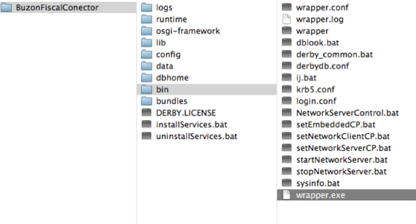

Estructura de carpetas.
Terminología
Versión: Con el fin de contar con un sistema amigable, nuestro conector te permite emitir comprobantes fiscales digítales mediante de un layout, TXT o XML, dependiendo de tus necesidades.
- De acuerdo a la versión seleccionada usted podrá depositar al Conector archivos de entrada en formato TXT o XML.
Parser: Periódicamente el Conector estará monitoreando si existen archivos depositados en la carpeta de entrada, tomará los archivos de manera secuencial en función a su nombre y fecha de creación.
- El Conector someterá el archivo a un lector o “parser” cuya función es el análisis de la sintaxis del archivo de entrada para validar que se cumpla con cierta estructura y que contenga la información mínima requerida para la emisión o cancelación de un comprobante fiscal digital.
- En caso de que algo esté incorrecto esta acción de validación generará un archivo de error que será colocado en la carpeta de diagnóstico.
- Cuando se trate de un Conector versión TXT, el resultado exitoso de la validación dará como resultado un archivo de remisión en XML el cual será enviado al servicio de Conector Fiscal para su procesamiento mediante un llamado de Web Service.
Comunicación: El Conector se comunica hacia Buzón Fiscal mediante llamados de Web Services y utiliza en su configuración un Certificado SSL para asegurar la transmisión de la información que viaja por Internet.
Licencias: Parte de la configuración del Conector implica la instalación de la Licencia correspondiente, la licencia de uso definirá la cuenta de Buzón Fiscal con la que se estará interactuando, la versión del Conector (TXT o XML) y si se está operando en ambiente de prueba o producción.
- De origen en la instalación inicial el Conector quedará configurado con una Licencia de prueba, concluido el periodo de certificación le será otorgada la Licencia definitiva.
Estructura general
La estructura general del conector esta formada como se describe a continuación:
La carpeta raíz del wrapper lleva el nombre de “BuzonFiscalConector”. Inclye otras carpetas importantes para su funcionamiento.
 Estructura general del wrapper del conector
Subcarpetas en data/
Conector opera por omisión con carpetas o repositorios para extraer remisiones, depositar los comprobantes emitidos y sus representaciones impresas
Dentro de data se encuentran cuatro carpetas, estas son:
in/ – Carpeta en la cual se ingresan los remisiones (txt o xml) que serán procesadas por nuestro servicio.
- Esta carpeta de entrada será leída por el Conector cada 10 segundos y procesará los archivos encontrados en el momento de la lectura, hasta no concluir con el procesamiento de ese bloque será que el Conector ejecute de nuevo la lectura de dicha carpeta.
out/- El Conector depositará en esta carpeta el comprobante generado una vez concluido el procesamiento de la remisión, si los archivos que fueron colocados en la carpeta de entrada no presentan error, por cada remisión procesada se obtendrán los siguientes archivos:
a. XML: Es el comprobante fiscal digital que ha sido entregado al SAT, el cual fiscalmente hablando es el que se utilizará para realizar las declaraciones. El emisor está obligado a respaldarlo en el domicilio en que fue emitido.
b. TXT: Este archivo contiene un extracto de la información del CFDi en formato de texto plano para que sea leído e importado al sistema del propietario.
c. PDF: Es una representación grafica del comprobante que podrá ser leído con Acrobat Reader, esta podrá convertirse en la versión de impresa de su Comprobante Discal Digital. Por omisión Conector tiene configurada una plantilla de visualización genérica pero esta puede ser personalizada a petición del cliente.
processed/ – En esta carpeta podrás encontrar un respaldo de las remisiones que procesaron, sin importan que estas tuvieron un error previo.